アミックスの新築アパート完成内覧会のお知らせ
アミックスでは、アパート完成時に内覧会を行っております。アパート建築・経営にご興味のあるかた、あるいはアパートのクオリティを実際にご覧になりたいかたはぜひお気軽にお越しください。
＊説明が不要なお客様は、スタッフの案内なしでもご自由にご覧いただくことができます。
また、事前のご予約も不要です。スタッフ一同心よりお待ちしております。
ご都合のつかない方は、別の日にご案内もできますのでご連絡下さい。尚、ご案内する物件は異なる場合がございます。
≫内覧会のようすはコチラから
［過去の内覧会］
≫2019年
≫2018年
≫2017年
≫2016年
≫2015年後半 ≫2015年前半
≫2014年後半
≫2014年前半
≫2013年後半 ≫2013年前半
≫2012年 ≫2011年
≫〜2010年
2011年12月9日（金）・10日（土） 江戸川区西一之江会場
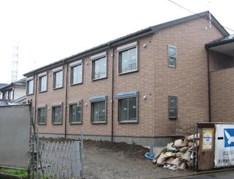
落ち着いた外観で人気のクラシックタイプです。
場 所：江戸川区西一之江２-２４-１２
日 時：2011年12月9日（金）・10日（土） 10:00-16:00
地 図：
大きな地図で見る
≫詳細はこちら(pdf)
2011年12月3日（土）・4日（日） 豊島区南池袋会場
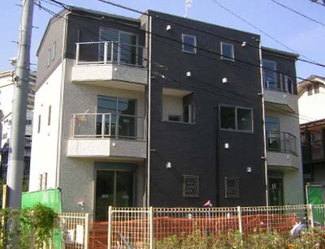
3階建てのスタイリッシュな外観に、
若者の希望を豊富に取り入れたプランニングです。
場 所：豊島区南池袋3-11-4
日 時：2011年12月3日（土）・4日（日） 10:00-16:00
地 図：
大きな地図で見る
≫詳細はこちら(pdf)
2011年11月12日（土）・13日（日） 江戸川区西瑞江会場
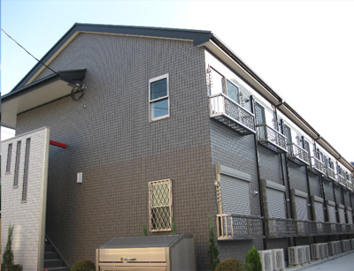
ロフト、カラーモニターインターホン付き、バストイレ別など、
オプション付きのクラッシックシリーズです。
場 所：江戸川区西瑞江2-29-64
日 時：2011年11月12日（土）・13日（日） 10:00-16:00
地 図：
大きな地図で見る
≫詳細はこちら(pdf)
2011年9月24日（土）・25日（日） 葛飾区堀切会場
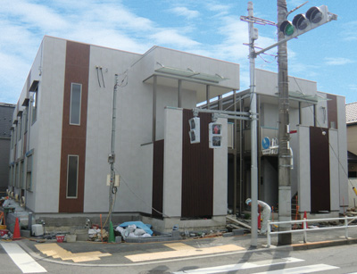
定番カラーアズHシリーズ。
RC造りを思わせるスタイリッシュな外観が人気です。
先着で弊社会長の末永が出版したアパート経営書籍をさしあげます。どうぞお気軽にお越しください。
（書籍の詳細はコチラ）
場 所：葛飾区堀切6-29-9
日 時：2011年9月24日（土）・25日（日） 10:00-16:00
地 図：
大きな地図で見る
≫詳細はこちら(pdf)
2011年9月23日(金・祝) 足立区南花畑会場
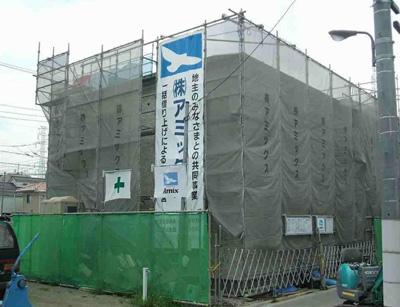
シックなカラーリングのクラッシックシリーズ。
落ち着いたフォルムが人気です。
場 所：足立区南花畑1-33街区（仮換地）
日 時：2011年9月23日（金・祝） 10:00-16:00
地 図：
大きな地図で見る
≫詳細はこちら(pdf)
2011年9月17日（土） 足立区梅田会場
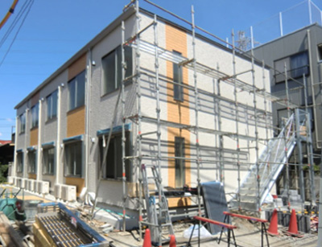
カラーアズSの外観に、カラーアズHの内装を取り入れた
コストパフォーマンスに優れたタイプです。
場 所：足立区梅田7-30-11
日 時：2011年9月17日(土) 10:00-16:00
地 図：
大きな地図で見る
≫詳細はこちら(pdf)
2011年9月9日（金）・10日（土）・11日（日） 江戸川区鹿骨会場
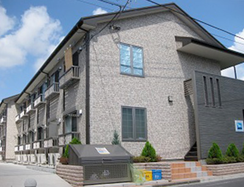
人気のクラシックシリーズです。
この機会にぜひご覧ください。
場 所：江戸川区鹿骨1-55-16
日 時：2011年9月
9日(金) 14:00-17:00
10日(土)・11(日) 10:00-16:00
曜日により開催時間が異なりますのでご注意ください
地 図：
大きな地図で見る
≫詳細はこちら(pdf)
2011年8月27日（土）・28日（日） 足立区大谷田会場
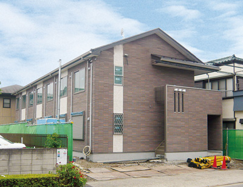
アミックスでは制震アパートの建築を積極的にすすめています。
今回は、制震装置を取り入れた人気のクラシックシリーズです。
場 所：足立区大谷田5-7-13
日 時：2011年8月27日（土）・28日（日） 10:00-16:00
地 図：
大きな地図で見る
≫詳細はこちら(pdf)
2011年7月6日〜10日 江戸川区篠崎町会場
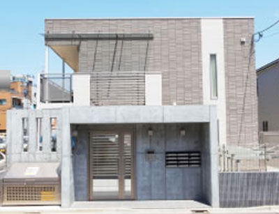
カラーアズＨシリーズにＲＣ（鉄筋）造のエントランスを組み合わせた、
少し豪華なカラーアズです。
会長ブログで詳細をご覧いただけます。
コチラ→「１点豪華主義」でアパートもマンション並みに？
ぜひ、アパート経営プランの参考にしてください。
（＊今回は新築物件の内覧会ではありません。あらかじめご了承ください。）
場 所：江戸川区篠崎町2-219 エクセル1
日 時：2011年7月
6日(水)・7日(木)・8日(金) 13:00-16:00
9日(土)・10(日) 10:00-16:00
曜日により開催時間が異なりますのでご注意ください
≫詳細はこちら(pdf)
2011年6月25（土）・26（日） 葛飾区柴又会場
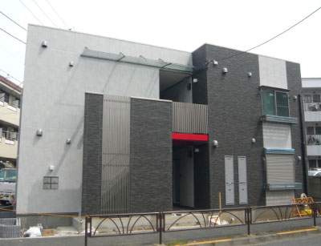
グレーとチャコール、そしてワンポイントの赤を活かした、シックなカラーアズHシリーズ。
場所：葛飾区柴又3丁目
日時：2011年6月25（土）・26（日）10:00-16:00
≫詳細はこちら
2011年3月21（月・祝） 江戸川区鹿骨会場
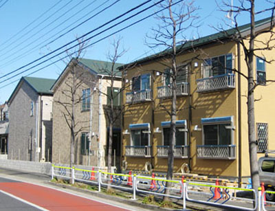
全26戸、3棟建てのクラシックタイプ。ぜひご覧ください。
場所：江戸川区鹿骨2丁目
日時：2011年3月21（月・祝）10:00-16:00
≫詳細はこちら
2011年3月19（土）20（日） 足立区入谷会場
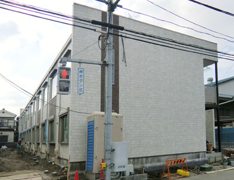 人気のカラーアズHタイプ。全22戸の堂々としたたたずまい。この機会にぜひご覧ください。 〈全22戸〉
場所：足立区入谷8
日時：2011年3月19（土）20（日）10:00-16:00
≫詳細はこちら
2011年3月12（土）13（日） 足立区梅田会場
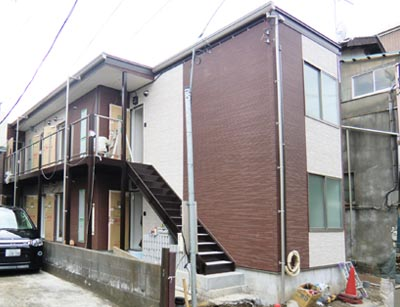
カラーアズSにカスタマイズアイテムを追加。個性的なフォルムで完成しました。 〈全8戸〉
場所：足立区梅田6
日時：2011年3月12（土）13（日）10:00-16:00
≫詳細はこちら
2011年3月6（日） 板橋区前野町会場
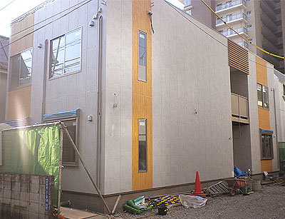
カラーアズHタイプ。シックでシャープなシルエット、そしてアミックスの高い技術力をご確認ください。 〈全12戸〉
場所：板橋区前野町2
日時：2011年3月6（日）10:00-16:00
≫詳細はこちら
2011年2月5（土）6（日） 足立区綾瀬会場
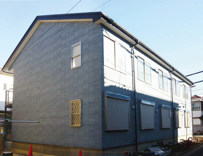
アミックスの定番、クラシックシリーズ。あらゆる街並みに似合う色づかいが人気です。 〈全10戸〉
場所：足立区綾瀬1-3-10
日時：2011年2月5（土）6（日）10:00-16:00
≫詳細はこちら
2011年1月22（土）23（日） 埼玉県八潮会場
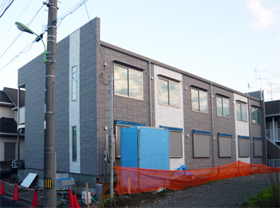
今回は落ち着いた色合いの外壁を取り入れた「カラーアズ」。必見です。
〈全12戸〉
場所：埼玉県八潮市八潮6-18-10
日時：2011年1月22（土）23（日）10:00-16:00
≫詳細はこちら
2011年1月15（土）16（日） 江戸川区南小岩会場
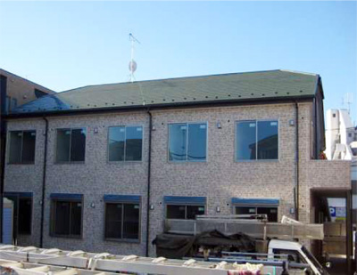
落ち着いたフォルムが人気の定番クラッシックシリーズ。
人気のロフトつき。〈全10戸〉
場所：東京都江戸川区南小岩4-9-19 サニー南小岩
日時：2011年1月15（土）16（日）10:00-16:00
≫詳細はこちら
2011年1月9（日）10（月・祝） 江戸川区東小松川会場
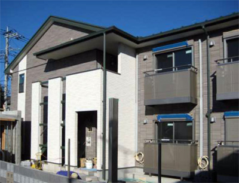
シックなシルエットが好評のクラシックタイプ。
注目のオートロック付きアパートです。〈全16戸〉
場所：東京都江戸川区東小松川4-28-3 パルフェ
日時：2011年1月9（日）10（月・祝）10:00-16:00
≫詳細はこちら